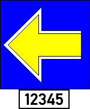

(4) Kennzeichnung Das Signal ist mit der eindeutigen Kennzeichnung der ETCS-Blockstelle versehen. 
(5) alleinstehend Ein alleinstehendes Signal Ne 14 gebietet Halt: für Züge, die nicht in der ETCS-Betriebsart FS oder OS verkehren. für Rangierfahrten. für Kleinwagenfahrten.